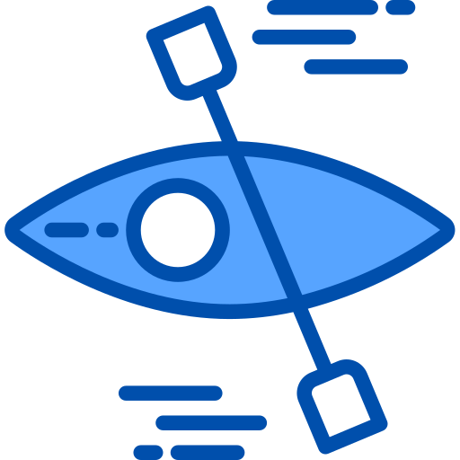

<div class="example-container" [class.example-is-mobile]="mobileQuery.matches">
  <mat-toolbar class="example-toolbar bg-color-primary-grey">
    <button mat-icon-button (click)="snav.toggle()">
      <mat-icon class="color-secondary-grey">menu</mat-icon>
    </button>
    &nbsp;
    <a routerLink="/">
      
    </a>
    &nbsp;
    &nbsp;
    <a routerLink="/"><span class="example-app-name color-primary-blue">Kayak Toes</span></a>
    <span class="example-spacer"></span>
    <div class="mat-caption color-secondary-grey">NTU CANOE/KAYAK SPRINT TEAM</div>
  </mat-toolbar>

  <mat-sidenav-container class="example-sidenav-container" [style.marginTop.px]="mobileQuery.matches ? 56 : 0">
    <mat-sidenav #snav [mode]="mobileQuery.matches ? 'over' : 'side'" [fixedInViewport]="mobileQuery.matches" fixedTopGap="56" [opened]="!mobileQuery.matches">
      <mat-nav-list>
        <a mat-list-item routerLink="{{nav.title}}" *ngFor="let nav of navs">
          <mat-icon class="mat-list-item-icon">{{nav.icon}}</mat-icon>
          {{nav.title | titlecase}}
        </a>
      </mat-nav-list>
    </mat-sidenav>

    <mat-sidenav-content>
      <router-outlet></router-outlet>
    </mat-sidenav-content>
  </mat-sidenav-container>
</div>